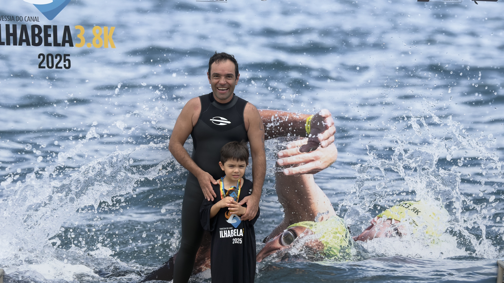

Enfrentar a imensidão do mar é um teste não apenas para o corpo, mas sobretudo para a mente. Eventos anuais como a icônica Travessia do Canal de Ilhabela representam um marco na vida de quem decide trocar a segurança das piscinas pela imprevisibilidade das correntes, dos ventos e das temperaturas do oceano.

Uma jornada de autoconhecimento
Para o atleta amador, completar uma prova dessas vai muito além de cruzar uma linha de chegada ou buscar um lugar no pódio. Trata-se de uma jornada de autoconhecimento e superação de medos profundos. O oceano ensina que não podemos controlar tudo ao nosso redor, mas podemos controlar nossa respiração, nosso foco e a forma como reagimos às adversidades.
Disciplina: treinar para viver melhor
Essa conquista exige uma base sólida que começa meses antes do evento: a disciplina. O compromisso de acordar de madrugada para treinar, a adequação da alimentação e o cuidado rigoroso com a saúde física e mental constroem uma nova rotina. O objetivo deixa de ser apenas a prova e passa a ser a qualidade de vida.
Você não treina apenas para nadar melhor; você treina para viver melhor.
Do mar para a vida
O impacto dessa transformação transborda para todas as áreas da vida:
- No ambiente de trabalho: a resiliência forjada na água fria se traduz em inteligência emocional no escritório. O atleta amador aprende a lidar melhor com a pressão, a manter o foco em metas de longo prazo e a contornar obstáculos imprevistos com a mesma calma que usa para navegar em um mar agitado.
- Na vida familiar: o ganho de energia e disposição muda a dinâmica em casa. Além disso, a disciplina e o compromisso com a saúde tornam-se um exemplo silencioso e poderoso para os filhos e parceiros, inspirando toda a família a adotar hábitos mais saudáveis.
A verdadeira vitória
No fim das contas, a medalha no peito após atravessar o Canal de Ilhabela é apenas um símbolo. A verdadeira vitória do atleta amador é a versão mais forte, equilibrada e saudável de si mesmo que emerge da água quando o desafio termina.
Informações importantes
Retirada de kits
Datas, horários e local no site oficial.
Briefing
Horário e local no site oficial.
Acessórios permitidos
Confira o regulamento no site oficial.